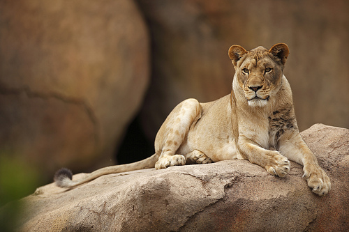

Females are the prime hunters and work together to prey. They do this by splitting into groups. One group chases the animals to a certain area whilst another group waits to ambush the victims. Their technique and skill is highly praised for its complexity and precision. Each lion begins to develop their own unique role that's specific to contributing to the success of killing the intended prey. Their diet consists of prey as large as elephants, hyenas, hippos, rhinos, etc to something as small as lizard and mice. A lot of the time their food is scavenged.